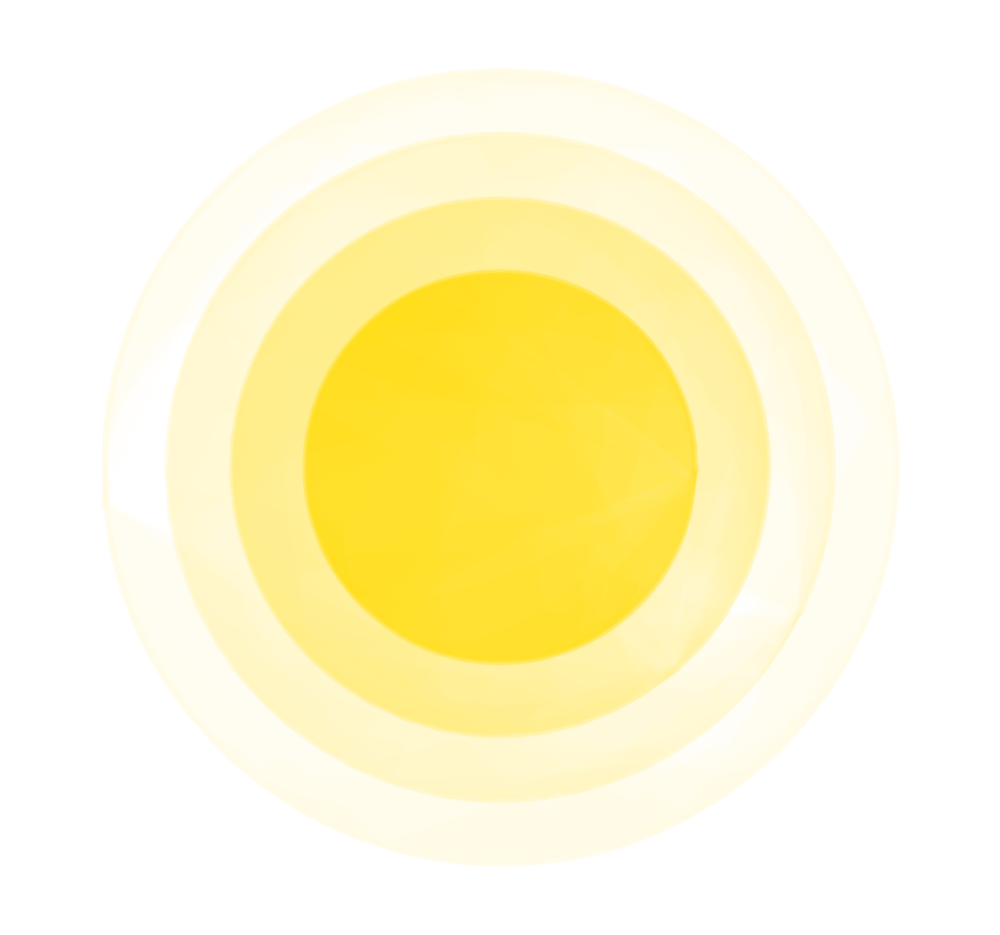
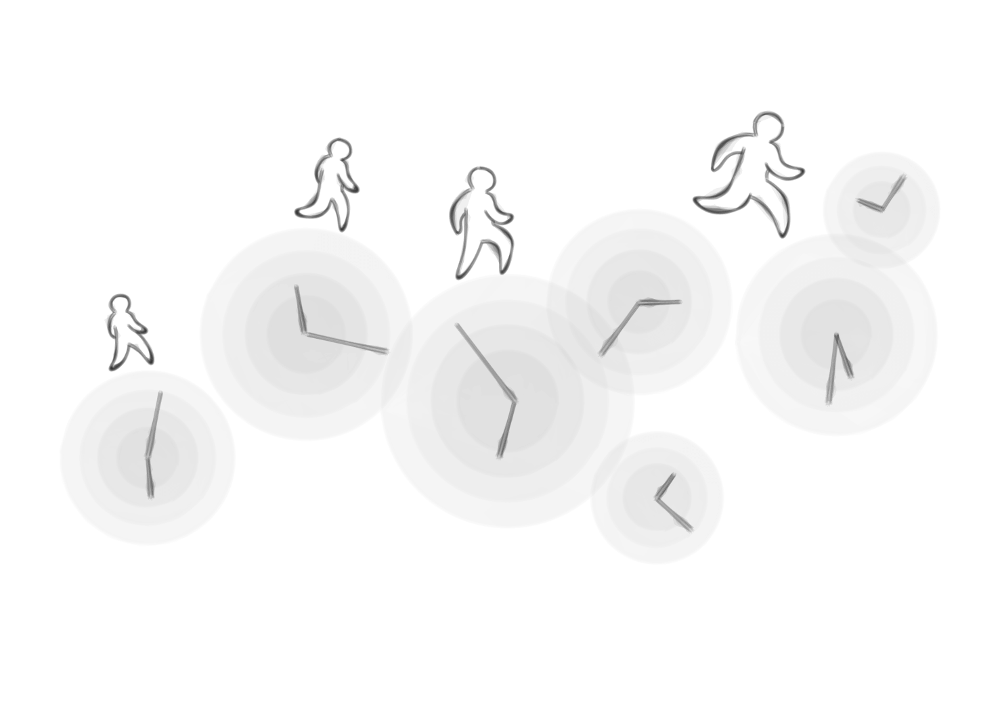

Wie fangen Sie Ihren Tag an ?
Stehen Sie immer unter Zeitdruck ?
Haben Sie schon Burn-Out gehabt ?
Tun Sie sich oft schwer im Homeoffice wegen
der Vermischung von Berufs- und Privatleben ?
Sind Sie unmotiviert ?
Wie können wir diese Herausforderungen meistern ?
Die Antwort ist einfach.
Wir sollten mehr auf unsere mentale Gesundheit achten.
Brauchen Sie eine mentale Auszeit ?
Dann sind Sie hier genau richtig.
Tanke mal auf,
befreie den Geist,
und arbeite besser.
an jedem Ort, jederzeit.